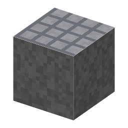

説明
①子ども まっ平らな鉄の台。物の平らさや長さを測るときの基準になる。
②学生 鋳鉄の板を3枚すり合わせて、そりが 1µm 以下になった物。置いて使える。もう一度すり合わせると、相手しだいでまたそることもある。
③大人 工場の検査室には、今も鋳鉄や花こう岩の定盤がある。20世紀には、さびず温度で変形しにくい花こう岩の定盤が増えた。
④ガチ 精密な測定・組み立ては、定盤の上で始まる。ゲージブロック（[8-05]）や除振台（[8-07]）も、平らな基準があって初めて意味を持つ。
作り方
（作り方のレシピは無い：拾う・掘る・ほかの方法）